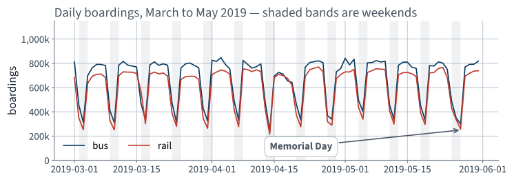
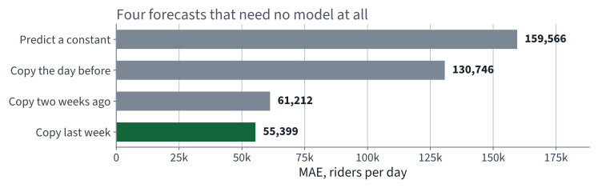
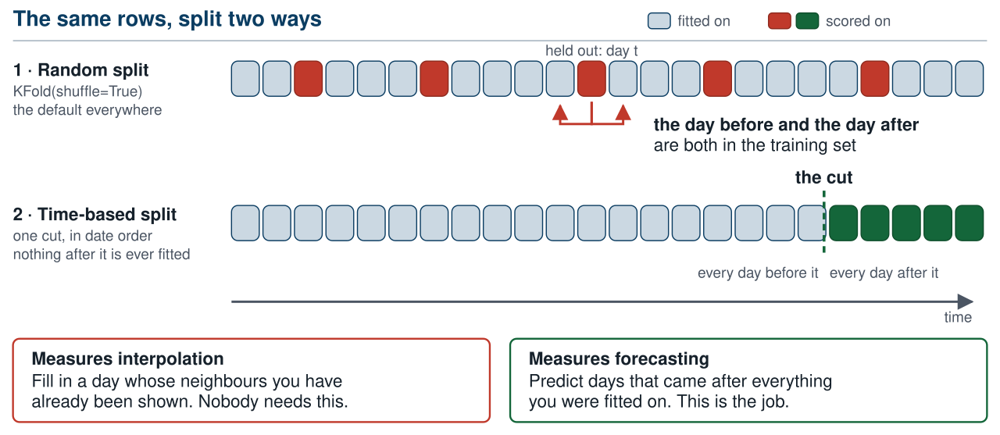
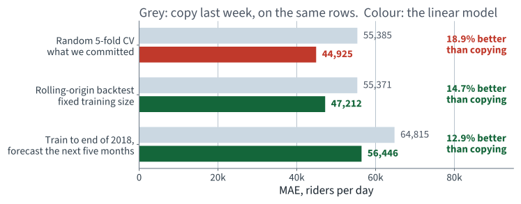
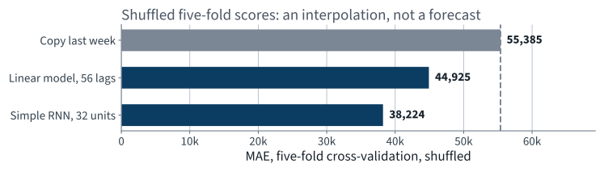
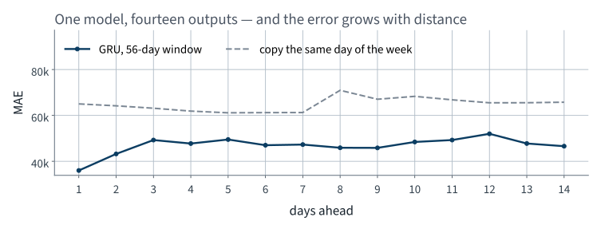
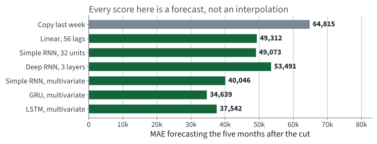

Applications of Machine Learning
BSc Mathematics of Artificial Intelligence · Third year
The task: the next day’s riders
You are a data scientist at the transit authority of a large city.
The task
Forecast how many people will board the rail network
the next day, from daily boarding totals going back twenty years. One number,
one day ahead. It decides how many trains and crews are scheduled.
Too high
Empty trains run: fuel and crew hours, measurable and
survivable.
Too low
Passengers are left on platforms at peak, a cost that
appears in no table you will be shown.
We will use a symmetric metric anyway, and say so out
loud. The label is free: the next day’s value is the label of
today’s window.
Today
The series and the protocol — what it looks like,
the number to beat, a linear model on 56 days, and why a forecast is
scored forward in time
The recurrent cell — one equation, four shapes of
model, backpropagation through time, and a first network trained and
measured
The method — the loss, the windows, the scale,
three ways to forecast ahead; then a deeper network, more series, and
fourteen days at once
Gates — LSTM and GRU, the ladder of every model
on the same days, and what March 2020 did to a model fitted on the years before
Design exercise — an energy retailer’s next-day demand forecast, in nine steps
No new derivation today.
examinable the forward protocol, the
architectures, and what each gate is for.
Bus falls, rail rises and then falls, and March 2020 is
a cliff, not a dip. We model one regime: 2016 to the end of May 2019,
1,247 days.
Zoom in: a seven-day cycle

Working days near the top, weekends at about half, every
seven days. The extra trough at the end of May is a public holiday: a
day_type column gives it the weekend’s code. A second,
slower cycle repeats once a year around a slowly moving level: that is
trend, and the weekly cycle is seasonality.
Eight weeks in, the next day out. A whole number of weeks, so every
position in the window sees the same weekday each time
MAE, in riders: the unit the operations team uses, and
a handful of holidays cannot dominate it as they would a squared
error
The trap in MAPE
A percentage error divides by the truth. On a holiday ridership collapses,
so the same miss counts several times over — exactly where every
model is weakest. Use it as a second opinion, never as the objective.
What nothing scores: the number to beat

Copying the same weekday last week: 55,399
over 1,191 days, 12.0% of a typical day, and 2.4 times
better than copying the day before. The seven-day cycle is worth more than
recency.
The simplest thing that could work
$$\hat{y}_{t+1} \;=\; b + \sum_{k=0}^{55} w_k\, y_{t-k}$$
Cut the series into overlapping windows, 56 days in and the
next day out, and fit fifty-six weights and a bias. With $w_6 = 1$ and every
other weight zero it is copy last week: the linear model
contains the baseline.
44,925
Its MAE under shuffled five-fold cross-validation, averaged
over twenty shuffles: 18.9% better than copying last week on
the same rows. Do not write that down yet.
That score came from a shuffled split

Cross-validation estimates the error on new data only if the
held-out rows are independent of the training rows, and come
from the situation the model will meet. A shuffled series
breaks both: a held-out day has its neighbours in training, and half the
training days lie in its future.
The upper protocol asks the model to fill a gap. The
lower one asks it to forecast. Only one of those is the job.
The split the system will actually face
Fit on everything up to the end of 2018; forecast the 151
days that follow, one at a time, never seeing any of them. Copy last week on
the same 151 days, because those days are harder for every
forecast:
Forecast, same 151 days
MAE
Copy last week
64,815
Linear, 56 lags
56,446
The margin over doing nothing is 12.9%, not
18.9%.
One cut is one sample. A rolling-origin
backtest moves the cut forward, refits, and scores the block that
follows, several times: a spread you could not get from one cut.
Every forward number in the rest of this lecture is
scored on these same 151 days.
Put the baseline beside every protocol

The margin falls from 18.9% to
14.7% to 12.9% as the protocol becomes
honest. A third of the case for the linear model was an artefact of the
evaluation. The networks have to beat 12.9%, not 18.9%.
$\mathbf{x}_t$ — the input at step $t$; $\mathbf{h}_t$ — the state after it
$\mathbf{W}_x$ and $\mathbf{W}_h$ do not depend on $t$: the same weights at every step
Compare Lecture 7: this is $\phi(\mathbf{X}\mathbf{W} + \mathbf{b})$ with one extra term, and that term is the whole idea
The state is the only route by which anything before step $t$
reaches step $t$. Its width is therefore a budget: whatever the network needs
to remember has to fit in $\mathbf{h}$.
Four shapes of recurrent model
Shape
Input
Output
Example
sequence to vector
a sequence
one value
today’s model
vector to sequence
one value
a sequence
a caption from an image
sequence to sequence
a sequence
a sequence
a forecast at every step
encoder–decoder
a sequence
a sequence
translation
We build the first and the third today. The fourth is
Lecture 18.
Training it: backpropagation through time
Unroll the network over the window and it becomes a deep feed-forward
network whose layers share their weights. Then differentiate it
exactly as Lecture 8 taught — nothing new is needed.
Which is also the problem
Unrolling 56 steps gives a 56-layer network, and by the chain rule a
gradient descending 56 layers is multiplied by one factor per layer, 56
times over. Here the factor is the same matrix every step,
because the weights are shared — so the gradient is governed by a
power of one matrix, and powers of a matrix either vanish or explode unless
its spectral radius sits almost exactly at one.
Scaling the initial weights so that each factor is about
one — the repair for a stack of independent layers — cannot fix
this. Something has to change in the cell itself.
smooth everywhere; a handful of shock days dominate the gradient
MAE
robust; its gradient is constant, so it converges slowly near the optimum
Huber
quadratic near zero, linear beyond — both properties, one knob
We optimise a proxy for MAE. The metric is what the
operator reads, the loss is what the optimiser can descend, and they are
allowed to differ.
The recurrent network, on the same shuffled folds

The simple RNN scores 38,224 on five
shuffled folds, seed 42: 31.0% better than copying last week
on the same folds (55,385) and 15% better than the linear model (44,925).
These folds are shuffled, so none of
these numbers is a forecast. Every forward number in this lecture is scored on
the same 151 days.
Windows overlap, and that matters
Consecutive training windows share almost all their content:
a 56-day window starting on day $t$ and one starting on day $t+1$ differ in two
values out of fifty-six.
Two consequencesShuffle them. Otherwise a mini-batch is near-identical
examples, and averaging near-copies cancels almost none of one
example’s noise: the step is noisier, and training stalls.
Do not let that shuffling cross the split. Windows are
shuffled within the training period only; the evaluation period is
still strictly later in time. Shuffling and leakage are different operations
and it is easy to conflate them.
Normalising a series
Scale by a constant computed on the training period only
— the same rule as every other lecture, and easier to break here
because the series looks like one object
Divide rather than standardise if the series is positive and
multiplicative: ridership is counts, and a ratio is more natural than a
difference
If you modelled the day-to-day change rather than the level, turn the
prediction back into a level before reporting it. The metric is in the
units the operator uses
Failure condition — a model scored on day-to-day changes
A model evaluated on day-to-day changes can look excellent and mean nothing: predicting no change at all scores well in those units. The units the metric was computed in decide what it is able to praise, and the report is usually silent about which they were.
What to log while it trains
Training and validation loss per epoch — the gap is Lecture 5's
The gradient norm — along time here rather than depth. A plain RNN on a long window shows it decaying
The forecast itself, plotted against truth, on a held-out stretch. A
number cannot tell you the model has learned to output last week’s value
with a one-day lag; a picture can
The failure a plot catches and a metric does not
A model that simply repeats the previous value scores well on almost any
error metric and is worthless. On a plot it is unmistakable: the prediction
is the truth, shifted right by one step.
Forecasting $k$ steps ahead: three strategies
Strategy
How
Weakness
Recursive
predict one step, feed it back, repeat
errors compound; the model never trained on its own output
Direct
a separate model per horizon
$k$ models, and none of them shares what the others learned
Sequence-to-sequence
one model, $k$ outputs at once
more to fit, and the outputs are not independent
All three are defensible and all three must be evaluated the
same way: forward in time, at the horizon you actually need.
A model that is excellent one step ahead and useless seven steps ahead is not
a good model if the operator plans a week in advance.
Teacher forcing, and what it costs
Training a sequence-to-sequence model, you can feed the
decoder the true previous token or its own previous
prediction.
Trains
At prediction time
True token (teacher forcing)
fast and stable
the model has never seen its own mistakes
Own prediction
slow, and early training is noise
matches deployment
Exposure bias
A model trained only on true prefixes meets a distribution at prediction
time that it never saw in training: its own errors, compounding. The forecast
drifts, and the further ahead you go the worse it gets — which is
precisely the recursive strategy’s weakness on the previous slide.
One argument. Three recurrent layers stacked, the output of
each feeding the next.
Model
Forecast MAE
Train MAE
Recipe
Simple RNN, one layer
49,073
35,972
sgd
Deep RNN, three layers
53,491
40,630
adam
On this seed, depth lost — on test and on
train. Do not write that down yet.
The same comparison, four seeds
Each recipe is scored on July–December 2018, inside the
training period, the lower score wins, and the winner is refitted. Only the
seed changes between rows:
Seed
Simple RNN
Recipe
Deep RNN
Recipe
42
49,073
sgd
53,491
adam
0
43,360
sgd
42,878
sgd
1
88,517
adam
42,299
sgd
2
42,027
sgd
149,707
adam
Depth loses under seeds 42 and 2 and wins under 0 and 1, on test and
on train alike. Seed 42’s gap is far inside either model’s
swing across seeds
Seed 42’s recipe choice for the simple RNN was a near-tie, sgd
by 1,001 riders (2.3%); seed 1 tips it to adam
Two refits failed outright: worse than copying last week (64,815),
and on train too (66,856 and 137,993). The recipe the selection slice
chose did not carry over to the full training period
Every fit is seeded, so each row reproduces exactly on one machine;
another processor’s rounding can put seed 42 on a different row
A ranking whose gap is smaller than its spread over seeds
is not a finding. Report it as unresolved.
Improvement 2 · Give it more series
We have been forecasting rail from rail alone, while a bus
series sits unused beside it — and a day-type column we established is
known in advance.
The architecture changes by one number: input_size=5.
Wait — that is a shift(-1)
The shuffled split at the start let a model train on the
rows surrounding what it was scored on. This one reads the future
deliberately.
The test that separates them
Is the value available at prediction time? The type of the
day we are forecasting is on the public calendar and has been for a year.
Its ridership is not.
This is the one question about leakage that no static
check can answer for you. It is not a property of the code; it is a property
of the world.
The result
Model
Forecast MAE
vs copying last week
Copy last week
64,815
—
Simple RNN, rail only
49,073
24% better
Simple RNN, five inputs
40,046
38% better
Eighteen per cent off the rail-only error for one line of
feature engineering and one changed constructor argument.
The rail-only row is the unstable one: across the four seeds
it runs from 42,027 to 88,517. The five-input row, at 40,046, beats every
one of them.
Most of it is the day type. The network no longer has to
infer that a holiday is coming from the shape of the previous eight weeks
— which is impossible — because we told it.
Improvement 3 · Forecasting further than one day
The operations team also wants a fortnight. Two ways:
Feed the forecast back
Predict day $t{+}1$, append it to the window as though it
had happened, predict $t{+}2$. Errors accumulate.
Predict all fourteen at once
Change the output layer to fourteen units and the target
to a vector. One model, no accumulation.
target = self.series[end : end + 14, 0] # 14 values, not 1
model = GruModel(input_size=5, hidden_size=32, output_size=14)
And a third way — predict fourteen at every step
At step 0 the model outputs the forecasts for steps 1 to 14;
at step 1, for steps 2 to 15; and so on. The target is a sequence of windows
rather than a single vector.
def forward(self, X):
outputs, _state = self.rnn(X)
return self.head(outputs) # every step, not outputs[:, -1]
Is that cheating?
No. A recurrent cell at step $t$ has seen steps $1$ to $t$ and nothing more
— it is causal. The loss simply gains a term at every
step, so many more gradients flow and they travel a shorter distance.
After training, only the last step’s output is used.
How far ahead can it see?

The error grows with distance, from
35,997 at one day to 46,586 at fourteen
— and stays below the no-model baseline throughout.
so over $T$ steps the gradient carries $T$ copies of the same
matrix: a deep stack’s product of factors, with the extra force that
it is one matrix rather than many independent ones.
What a gated cell does instead
An LSTM keeps a separate cell state $\mathbf{c}_t$ updated additively:
$\mathbf{c}_t = \mathbf{f}_t \odot \mathbf{c}_{t-1} + \mathbf{i}_t \odot \tilde{\mathbf{c}}_t$.
When the forget gate $\mathbf{f}_t$ is near one, $\partial\mathbf{c}_t/\partial\mathbf{c}_{t-1}\approx\mathbf{1}$
and the gradient passes through almost unchanged. That is the entire trick:
a path along which the gradient is added to rather than multiplied.
LSTM, gate by gate
Gate
Equation
What it decides
forget $\mathbf{f}_t$
$\sigma(\cdot)$
how much of the old cell state to keep
input $\mathbf{i}_t$
$\sigma(\cdot)$
how much of the candidate to write
candidate $\tilde{\mathbf{c}}_t$
$\tanh(\cdot)$
what to write, if anything
output $\mathbf{o}_t$
$\sigma(\cdot)$
how much of the cell state to expose as $\mathbf{h}_t$
Every gate is a sigmoid of the same two inputs
$(\mathbf{x}_t, \mathbf{h}_{t-1})$ with its own weights, so a
sigmoid in $[0,1]$ is a soft switch and the network learns when to open
it. Four gates means roughly four times the parameters of a plain cell.
examinable State
what each gate does and why the cell-state update is additive.
Still additive, still a near-identity path when
$\mathbf{z}_t$ is small — the property that mattered, kept, with about
three quarters of the parameters.
Which to use
On most problems they are within noise of one another. GRU is smaller and
trains faster; LSTM has the longer track record. Measure, on your own
protocol, rather than inheriting an opinion.
Both gated cells, measured
Model, all five inputs
Forecast MAE
Training MAE
Simple RNN
40,046
27,035
LSTM
37,542
24,540
GRU
34,639
20,356
The GRU wins on the forecast, and the second column says why
to be careful: it fits the training rows 25% better than the plain cell but
the forecast only 14% better. That gap is overfitting, and
it is what to attack next, before reaching for a bigger cell.
Both cells are Chapter 13. Neither is a large model:
a few thousand parameters.
Every model, measured the honest way

From 64,815 to 34,639 — 47% better
than doing nothing, and every bar is a forecast on the same days.
The whole application, in one table
Forecast
What we reported
What it does
Copy last week
55,385
64,815
Linear, 56 lags
44,925
49,312
Simple RNN
38,224
49,073
GRU, five inputs
—
34,639
The top-left number averages copy-last-week over the five
shuffled folds; over all 1,191 days at once it is 55,399. The two middle rows are the same models measured twice; the
simple RNN’s right-hand number is the one that moves between seeds.
The linear row’s left number is the least-squares fit under shuffled
folds; its right number is the same model trained like the networks, with
the Huber loss (least squares forward scored 56,446), on the same 151 days
as every other right-hand number. The
bottom row is the model we would actually deploy, and it was never measured
the wrong way.
The final number is better than the one
first reported — but we reached it by first admitting that the
reported one was fiction.
Is 34,639 good?
It is 47% better than the system a transit
authority could run with no data scientist at all, and its typical miss is
around 10.4% of the day it is forecasting — against 16.5% for copying
last week on those same 151 days. A naive percentage measured over
any other set of days is not the comparison to make here. (As a share of a mean day on those same 151 days —
583,030 riders — the miss is 5.9%, which is a third
quantity again.)
What a defensible report says
“Forecasting the five months after the training cut, and never seeing
them, the model’s mean absolute error is 34,639 boardings a day against
64,815 for copying the same day of the previous week. Both figures are on
identical rows. The gain is concentrated on holidays.”
Note what that sentence contains: the protocol, the
baseline, the rows, and where the gain comes from. Four things the number
alone does not carry.
Red team it: what happens when the world changes?
Fit on everything to the end of 2019. Forecast the four months
from March 2020, which nobody in this room needs reminding about.
MAE
The linear model, trained to the end of 2019
84,380
Copying last week, on the same 122 days
36,282
The actual mean level over that period
141,404
The model is 2.3 times worse than doing
nothing, and its error is six tenths of the entire level.
Failure condition — a regime the training window never contained
Scored on the four months from March 2020, the model is 2.3 times worse than doing nothing and its error is six tenths of the level of the series. Nothing in training could have shown this: the failure is that the future stopped resembling the window the model was fitted on.
To be fair to the model
March 2020 is not a leak and it is not the model’s fault. No
forecaster could have produced it from eight weeks of history, and copying
last week wins only because it adapts within a week of the collapse.
The lesson is not “the model is bad”. It is that an honest
protocol told you the model had failed, on the day it failed. A
shuffled split, with those same days spread across its training folds,
could not have.
Which is why a deployed forecaster is monitored against
its own naive baseline, continuously. If the margin disappears, something has
changed in the world.
Temporal leakage checklist — keep this
Is the split by date, not by row?
Does every feature exist at the moment the forecast is made? Name the
moment
Were any statistics — means, scalers, encodings — computed
over the whole series before the cut?
Do the training windows overlap the scored windows? Purge them
Is the baseline computed on identical rows to the model?
Does the reported score come from more than one origin?
Six questions. The third is the oldest leak in the
course — a statistic fitted before the split — and the fourth is
the one only a series of overlapping windows has.
A recipe for a forecasting model
Plot the series. Seasonality and trend are usually visible, and cost
nothing to find
Compute the naive baselines: the day before, and the same day last week.
These are the numbers to beat
Fix the protocol before fitting anything: horizon, rolling origin,
number of folds, metric
Fit a linear model on lags. It is fast, and it is often close
Only then a recurrent model, scored on the same protocol
Report the ladder with its spread, not the best row alone
Steps 2 and 3 come before step 4 for one reason:
after you have a number, you will not choose the protocol that makes it look
worse.
Runs on free CPU. The series is short and the networks
are small
The recurrent model of today’s first slides, written and trained
line by line; the multivariate frame and its shift(-1)
The ladder: six models, each recipe chosen inside the training period,
scored on the same 151 forward days — with both selection scores
printed, and the two univariate RNNs re-run under three more seeds
The simple RNN on shuffled folds; fourteen days ahead; and March 2020
What to change
Change the seed in the setup cell to one the seed table does not show and
re-run the ladder. Watch the simple and the deep RNN: if their order flips,
you have reproduced the lecture’s point about a ranking that rests on
one seed.
Design exercise · in the manner of an ML system-design interview
The task: an energy retailer’s next-day demand forecast, which decides what it buys
The brief
An energy retailer sells electricity to households and buys what it
delivers on the wholesale market the day before. The purchasing
desk’s order is what the model drives: for each hour of the next
day, a forecast of its customers’ demand, in the
market’s units. Buy short, and the gap costs the balancing price;
buy long, the surplus is sold at a loss. Finance reads the imbalance
bill against margin.
Given: years of hourly meter readings summed over the
customers; archived weather forecasts; holidays
Scale: tens of thousands of hourly rows per tariff
group, a few groups; one order a day
Consumers of the output: the purchasing desk, the risk
team, and finance, which pays the bill
Nine steps follow, each with the pitfall that catches a
first attempt and what to do about it. The model at the centre is
today’s: a gated recurrent network on windows of the series.
Step 1 — Frame it: the horizon, the metric, and what an error costs
The horizon is the market’s: every hour of the next day, issued
before the auction closes — a day ahead, not one step ahead
The metric is the mean absolute error in the units the desk buys in,
read beside the no-model forecasts on identical hours; the
training loss may be Huber, the metric is not
What an error costs is not symmetric — the balancing price on a
shortfall, a loss on the surplus — and that is finance’s
question, asked before the loss is chosen
Pitfall
The first number reported is the one-step-ahead error, because that is
what the training loop produces, and it looks splendid: the next hour is
nearly the last hour. The desk buys a day ahead. Fix the protocol before fitting
anything — horizon, rolling origin, folds, metric — and score
every model at the horizon the order needs.
Step 2 — The numbers to beat, before any network
Plot the series: a daily cycle, a weekly one, an annual one, and
holidays that look like weekends
Compute the naive forecasts: the same hour the
day before, the same hour the week before. Demand repeats, so copying
last week is hard to beat — it is what the desk orders on now
Then a linear model on lagged hours. It contains the seasonal copy as
one weight of one, beats it modestly and cheaply
Pitfall
Reporting the recurrent network against the mean of the series, or against
nothing. The seasonal copy is the bar, on the same hours as the model; a
network that beats it by less than the fold-to-fold spread has not beaten
it. And the baselines come first for a reason: once you have a number,
you will not choose the protocol that makes it look worse.
Step 3 — Split by date, window inside the split, scale on the training period
Training years up to a cut, validation after it, test after that;
several origins rolled forward, so the score is a spread
Each example is a window of recent hours with the next day’s
hours as target; consecutive windows share almost everything, so
shuffle them — within the training period only
Divide the series by a constant fitted on the training period: demand
is positive and multiplicative, so a ratio is more natural; report the error in the market’s units
Pitfall — the oldest leak, and the one only windows have
The scaler fitted on the whole series, because the series looks like one
object — and the windows whose target hours lie past the cut, which
put the scored days into training. The release promises a margin the
desk never sees. Fit every statistic before the cut, and purge every
window that straddles it.
Step 4 — Inputs: the history, and what is known in advance
The window of recent demand, one series per tariff group, as the
recurrent input
What the calendar already says about the day being forecast —
its type, holiday or not — as extra columns: the legitimate look
ahead, because it is public a year early
The weather forecast for that day — temperature drives heating
and cooling — as the forecast issued that afternoon,
from the archive, not the weather later observed
Pitfall
Training on the observed temperature of the forecast day. The join is
one line, and the model learns to read a number the desk will never have
when it orders: the offline error falls, the live error does not, and
finance pays the difference. The test is not in the code — is
the value available at the moment the order is placed? — and
the fix is to train on the archived forecasts, errors included.
Step 5 — The model: a gated cell, and every hour of the next day at once
A GRU over the window, with demand, day type and forecast temperature
at each step; a linear head with one output per hour of the next day
— sequence to vector, the whole horizon at once
Huber loss, so a few shock days do not own the gradient; the metric
stays the absolute error
The same training loop as every network in this course, a few
thousand parameters, and the recipe chosen on the validation stretch
Pitfall — exposure bias
Forecasting the day recursively: predict one hour, append it as though it
had happened, predict the next. The model was trained only on true
history, meets its own errors for the first time in service, and they
compound across the day — the evening peak is forecast from a
morning the model invented. Predict the whole day at once, or a day at
every step with a loss at every step — and evaluate at the horizon
either way.
Step 6 — What breaks along time: the gradient, and what to do about it
A window of a week of hourly steps unrolls into a network a few
hundred layers deep with one matrix shared by all of them: the
gradient carries a power of that matrix, and vanishes or explodes
The gated cell is the structural answer — an additive path along
which the gradient is added to rather than multiplied
Log the gradient norm each epoch, beside both losses: a plain cell on
a long window shows it decaying; a loss that spikes shows it
exploding
Pitfall
A training loss that sits flat for ten epochs, or jumps to a number with
too many digits and stays, read as “needs more epochs”
or “needs a smaller network” — as the release slips.
Read the norm first. Clip the gradient — rescale it whenever its
norm passes a threshold chosen from its distribution — a clip below the median turns the optimiser into
something else — and if a plain cell still decays, change the cell,
not the learning rate.
Step 7 — Read the result honestly: seeds, origins, and a picture
Every model on the same forward days, from several origins, under
several seeds: report the ladder with its spread, never the best row
The gap between training and forecast error is overfitting, and it is
what to attack before a bigger cell
Plot a held-out week, forecast against truth. A model that outputs the
previous day shifted by an hour scores well on almost any metric and
is worthless; on the plot it is unmistakable
Pitfall
A deeper network beats the shallow one on the first run, and that goes in
the release note. Change only the seed and the order flips; the gap at
any one seed is smaller than either model’s swing across seeds. A
ranking that rests on one run is not a finding — report it as
unresolved, and spend the compute on seeds before depth.
Step 8 — In production: shadow first, then the day the world changes
Shadow first: scored beside the desk’s old method on identical
hours, and only then writing the order. Truth arrives with the next
day’s meter data, so the margin over the seasonal copy is a
running number
Retrain on a rolling window at a fixed cadence; the data team is on
call for the days the margin vanishes
A price rise that sends customers to a rival, a tariff that moves use
to cheap hours, rooftop solar, a lockdown: none is in the window
Pitfall
The model keeps forecasting the old customer base and is worse than
copying last week within a week of the change — the copy adapts,
the model does not, and finance reads it in the imbalance bill. Monitor
the margin over the naive forecast continuously; when it vanishes, fall
back to the copy, page the person on call, and refit on the regime that
has begun.
Step 9 — Ship it: the pipeline, and the pitfalls in one table
Meter readings → plot, seasonal copies, linear on lags
→ protocol fixed at the day-ahead horizon → split by date,
windows purged, scaler on the training period → history, day type,
archived forecasts → a GRU with one output per hour, norm clipped
→ ladder with spread, and a plot → shadow run, scored daily
against the copy → fall back, retrain.
Pitfall
Address it by
Scored one step ahead
the protocol fixed at the market’s horizon
No baseline, or the mean
the seasonal copy and a linear model on lags, same hours
Scaler on the whole series; straddling windows
statistics fitted before the cut; windows purged
Observed weather at training time
the archived forecast the model will have in service
Recursive forecasts from true prefixes
the whole day predicted at once; evaluated at the horizon
Gradients vanish or explode along time
a gated cell; the norm logged and clipped
One seed; a shifted copy that scores well
several seeds and origins, with the spread; a plot
A regime the window never contained
the margin over the copy monitored daily; fall back, refit
What we did
Set the number to beat before any model — copying last week,
55,399 — and measured that a shuffled split overstates a
forecast: the linear model’s margin is 18.9% shuffled and 12.9%
forward
Replaced a fixed window with a state: a recurrent network is a
deep network whose layers share their weights
Saw that backpropagation through time is a deep stack’s
vanishing or exploding gradient with one aggravation: the same matrix multiplies the gradient at every
step, so its powers vanish or explode
Forecast several steps ahead — recursively, directly, and
sequence-to-sequence — and named exposure bias
Ran the same depth comparison under four seeds and watched it flip: a
ranking that rests on one seed is not a finding
Added more series and the next day’s type, legitimately, and
measured that they paid more than depth did
Met LSTM and GRU: a gate is a path along which the gradient is added to
rather than multiplied
Watched an honest protocol report the regime change of March 2020
— the failure that ends forecasting systems
Designed an energy retailer’s next-day demand forecast —
the one that decides how much power it buys — in nine steps:
the horizon fixed at the market’s, the seasonal copy as the
bar, the scaler and the windows kept inside a split by date, archived
forecasts as inputs, a gated cell predicting the whole day at once,
the gradient norm logged and clipped, seeds and a plot before any
ranking, a shadow run before the first order, and the margin over
the copy monitored for the day the customer base changes
Not presented — for afterwards
Exercises Lecture 16
five, in the style of the written paper
Exercises — Lecture 16
A recurrent network is trained on 56-day windows drawn from one series. Explain why shuffling the windows is legitimate while shuffling the series is not. [4]
A one-layer RNN beats a three-layer RNN on test and on train. Re-run with only the seed changed, the same code reverses the order on both. State what the ranking rested on, and what would settle it. [4]
Gates were introduced after a plain recurrent cell failed over long windows. State the mechanism, in terms of what happens to the same matrix over 56 steps. [4]
Solutions on Lecture 17’s deck.
Exercises — Lecture 16 (continued)
A colleague builds the multivariate forecaster with day_type.shift(-1) as a feature and objects that it reads the future. State whether it is a leak, and the one question that settles it. [5]
Report the training MAE beside the test MAE. Name the two failures the pair distinguishes, and say why the test column alone cannot. [4]
Solutions on Lecture 17’s deck.
The five set at the end of Lecture 15
Solutions Lecture 15
not part of this lecture
Solutions — Lecture 15
1. A crop-disease classifier is fine-tuned on a few field photos per disease, with random hue shifts among its…
Yellow against green is the symptom: shifting the hue can turn a chlorotic leaf into a healthy-looking one and keep the “diseased” label. An augmentation is a claim that the label does not change; make it only where an agronomist would agree.
Flips, rotations, crops and mild brightness changes keep the label; a change to the colour that defines the class does not
Augmentation belongs on the training loader only
2. A network trained and tested on a large public set of leaves photographed one at a time on a lab table…
The test set shares the lab’s background, light and sessions, so a shortcut the network learned from them scores as well as the symptom would. Test on field photos split by farm and season; paste leaves onto other backgrounds; check what the network attends to.
A network takes whatever separates the classes most cheaply
A test set that shares a shortcut cannot detect it
Solutions — Lecture 15 (2)
3. Solution A finds the leaf by thresholding green pixels, then measures colour, spots and texture on that mask.…
The segmentation: other leaves, soil and dead brown tissue fall on the wrong side of the threshold. Every feature is measured on the mask, so the classifier receives wrong numbers with no sign they are wrong. Fix the capture (one leaf against a plain background, a quality check) or find the leaf with a learned detector.
The user interface is part of the feature engineering
Solution B keeps this step, done by a detector instead of a threshold
4. Two cooperatives want the same diagnosis app. One photographs leaves at a fixed station with the same light…
The station: hand-made features. Segmentation is reliable under fixed capture, and few labels favour few numbers to fit. The field: a pretrained network fine-tuned on the field photos, which learns cues nobody named and copes with clutter it was trained on.
The choice depends on how controlled the capture is and how many field labels exist, not on which method is newer
In both, the other method is the baseline to beat
Solutions — Lecture 15 (3)
5. The diagnosis app ends in a softmax over the diseases of the selected crop. Say why it must be able to…
A softmax always names a disease, even for a blurred photo or a fruit, and a confident wrong diagnosis sends a farmer to spray the wrong product. Below a threshold the photo goes to an agronomist; the threshold is chosen with the agronomists from accuracy against coverage on field photos.
Abstention is part of the output, not a failure of it
The probabilities must be calibrated before a threshold on them means anything
Lecture 17 · Géron Ch. 14
Text
Reviews as data, and two bag-of-words baselines to beat
Softmax and cross-entropy, and why their gradient is $\mathbf{p} - \mathbf{y}$
Subword tokens, embeddings and a recurrent classifier — then the same
model with pretrained embeddings swapped in